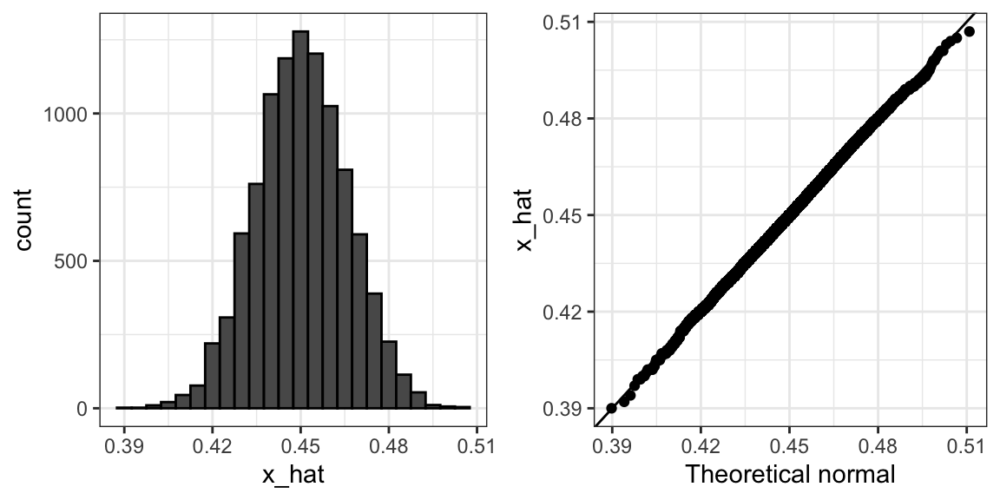

Capítulo 15 Inferencia estadística
En el capitulo 16 describiremos, con cierto detalle, cómo los agregadores de encuestas, como FiveThirtyEight, usan los datos para predecir los resultados de las elecciones. Para entender cómo lo hacen, primero debemos aprender los conceptos básicos de la inferencia estadística, la parte de la estadística que ayuda a distinguir los patrones reales de esos que surgen del azar. La inferencia estadística es un tema amplio y aquí repasaremos los conceptos básicos utilizando las encuestas como un ejemplo motivador. Para describir los conceptos, complementamos las fórmulas matemáticas con simulaciones Monte Carlo y el código R.
15.1 Encuestas
Las encuestas de opinión se han llevado a cabo desde el siglo XIX. El objetivo general es describir las opiniones de una población específica sobre un set particular de temas. Recientemente, estas encuestas han sido mas notables durante las elecciones presidenciales en EE.UU.. Las encuestas son útiles cuando entrevistar a cada miembro de una población particular es logísticamente imposible. La estrategia general es entrevistar a un grupo más pequeño, elegido al azar, y luego inferir las opiniones de toda la población a partir de las opiniones del grupo más pequeño. La teoría estadística que se usa para justificar el proceso se conoce como inferencia y es el tema principal de este capítulo.
Quizás las encuestas de opinión más conocidas son esas realizadas para determinar el candidato favorito de los votantes en una elección determinada. Los estrategas políticos hacen uso extensivo de las encuestas para decidir, entre otras cosas, cómo invertir recursos. Por ejemplo, es posible que quieran saber en qué regiones geográficas enfocar sus esfuerzos de “sacar el voto”.
Las elecciones son un caso particularmente interesante de encuestas de opinión porque la opinión real de toda la población se revela el día de las elecciones. Por supuesto, cuesta millones de dólares realizar una elección real, lo que hace que las encuentas sean una estrategia efectiva para aquellos que quieren pronosticar los resultados.
Aunque típicamente los resultados de estas encuestas se mantienen privados, las organizaciones de noticias realizan encuestas similares porque los resultados tienden a ser de interés público y los datos se hacen públicos. Eventualmente estaremos analizando tales datos.
Real Clear Politics56 es un ejemplo de un agregador de noticias que organiza y publica resultados de encuestas. Por ejemplo, presentan los siguientes resultados de las encuestas que ofrecen estimaciones del voto popular para las elecciones presidenciales del 201657:
| Poll | Date | Sample | MoE | Clinton | Trump | Spread |
|---|---|---|---|---|---|---|
| Final Results | – | – | – | 48.2 | 46.1 | Clinton +2.1 |
| RCP Average | 11/1 - 11/7 | – | – | 46.8 | 43.6 | Clinton +3.2 |
| Bloomberg | 11/4 - 11/6 | 799 LV | 3.5 | 46.0 | 43.0 | Clinton +3 |
| IBD | 11/4 - 11/7 | 1107 LV | 3.1 | 43.0 | 42.0 | Clinton +1 |
| Economist | 11/4 - 11/7 | 3669 LV | – | 49.0 | 45.0 | Clinton +4 |
| LA Times | 11/1 - 11/7 | 2935 LV | 4.5 | 44.0 | 47.0 | Trump +3 |
| ABC | 11/3 - 11/6 | 2220 LV | 2.5 | 49.0 | 46.0 | Clinton +3 |
| FOX News | 11/3 - 11/6 | 1295 LV | 2.5 | 48.0 | 44.0 | Clinton +4 |
| Monmouth | 11/3 - 11/6 | 748 LV | 3.6 | 50.0 | 44.0 | Clinton +6 |
| NBC News | 11/3 - 11/5 | 1282 LV | 2.7 | 48.0 | 43.0 | Clinton +5 |
| CBS News | 11/2 - 11/6 | 1426 LV | 3.0 | 47.0 | 43.0 | Clinton +4 |
| Reuters | 11/2 - 11/6 | 2196 LV | 2.3 | 44.0 | 39.0 | Clinton +5 |
Aunque en Estados Unidos el voto popular no determina el resultado de las elecciones presidenciales, lo utilizaremos como un ejemplo ilustrativo y sencillo de cuán bien funcionan las encuestas. Pronosticar la elección es un proceso más complejo ya que implica combinar resultados de 50 estados y DC y lo describiremos en la Sección 16.8.
Por ahora, hagamos algunas observaciones sobre la tabla anterior. Primero, tengan en cuenta que las diferentes encuestas, todas tomadas días antes de las elecciones, informan una diferencia diferente: la diferencia estimada entre el apoyo a los dos candidatos. Observen también que la diferencia indicada ronda en torno a lo que acabó siendo el resultado real: Clinton ganó el voto popular por 2.1%. También vemos una columna titulada MoE que significa margen de error (margin of error en inglés).
En esta sección, mostraremos cómo se pueden aplicar los conceptos de probabilidad que aprendimos en capítulos anteriores para desarrollar enfoques estadísticos que hacen de las encuestas una herramienta eficaz. Estudiaremos los conceptos estadísticos necesarios para definir estimaciones y márgenes de errores, y mostraremos cómo podemos usar estos para pronosticar resultados finales relativamente precisos y también proveer una estimación de la precisión de nuestro pronóstico. Una vez que aprendamos esto, podremos entender dos conceptos que son ubicuos en la ciencia de datos: intervalos de confianza y valores p. Finalmente, para comprender las declaraciones probabilísticas sobre la probabilidad de que un candidato gane, tendremos que aprender sobre los modelos bayesianos. En las secciones finales, lo reunimos todo para recrear la versión simplificada del modelo de FiveThirtyEight y aplicarlo a las elecciones presidenciales del 2016.
Comenzamos conectando la teoría de probabilidad con la tarea de usar encuestas para aprender sobre una población.
15.1.1 El modelo de muestreo para encuestas
Para ayudarnos a entender la conexión entre las encuestas y lo que hemos aprendido, vamos a construir una situación similar a la que enfrentan los encuestadores. Para imitar el desafío que enfrentan los encuestadores en términos de competir con otros encuestadores para la atención de los medios, utilizaremos una urna llena de cuentas para representar a los votantes y fingiremos que estamos compitiendo por un premio de $25 dólares. El desafío es adivinar la diferencia entre la proporción de cuentas azules y de cuentas rojas en esta urna (en este caso, un frasco de pepinillos):

Antes de hacer una predicción, pueden tomar una muestra (con reemplazo) de la urna. Para imitar el hecho de que realizar encuestas es costoso, les cuesta $0.10 cada vez que escojen una cuenta. Por lo tanto, si el tamaño de su muestra es 250 y ganan, ni ganarán ni perderán ya que acabarían pagando $25 por un premio de $25. Su entrada en la competencia puede ser un intervalo. Si el intervalo que someten contiene la proporción real, obtienen la mitad de lo que pagaron y pasan a la segunda fase de la competencia. En la segunda fase, la entrada con el intervalo más pequeño será la ganadora.
El paquete dslabs incluye una función que muestra un sorteo aleatorio de esta urna:

Piensen en cómo construirían su intervalo según los datos que se muestran arriba.
Acabamos de describir un modelo de muestreo sencillo para encuestas de opinión. Las cuentas dentro de la urna representan a las personas que votarán el día de las elecciones. Los que votarán por el candidato republicano están representados con cuentas rojas y los demócratas con cuentas azules. Para simplificar, supongan que no hay otros colores. Es decir, que solo hay dos partidos: republicano y demócrata.
15.2 Poblaciones, muestras, parámetros y estimaciones
Queremos predecir la proporción de cuentas azules en la urna. Llamemos a esta cantidad \(p\), que luego nos dice la proporción de cuentas rojas \(1-p\) y la diferencia \(p - (1-p)\), que se simplifica a \(2p - 1\).
En los libros de texto estadísticos, las cuentas en la urna se llaman la población. La proporción de cuentas azules en la población \(p\) se llama un parámetro. Las 25 cuentas que vemos en el gráfico anterior se llaman la muestra. La tarea de la inferencia estadística es predecir el parámetro \(p\) utilizando los datos observados en la muestra.
¿Podemos hacer esto con las 25 observaciones anteriores? Ciertamente es informativo. Por ejemplo, dado que vemos 13 cuentas rojas y 12 azules, es poco probable que \(p\) > .9 o \(p\) <.1. ¿Pero estamos listos para predecir con certeza que hay más cuentas rojas que azules en el frasco?
Queremos construir una estimación de \(p\) utilizando solo la información que observamos. Una estimación se debe considerar un resumen de los datos observados que consideramos informativos sobre el parámetro de interés. Parece intuitivo pensar que la proporción de cuentas azules en la muestra \(0.48\) debe estar al menos relacionado con la proporción real \(p\). ¿Pero entonces predecimos que \(p\) es 0.48? Primero, recuerden que la proporción muestral es una variable aleatoria. Si ejecutamos el comando take_poll(25) cuatro veces, obtenemos una respuesta diferente cada vez, ya que la proporción muestral es una variable aleatoria.

Tengan en cuenta que en las cuatro muestras aleatorias de arriba, las proporciones de la muestra varían de 0.44 a 0.60. Al describir la distribución de esta variable aleatoria, podremos obtener información sobre cuán buena es esta estimación y cómo mejorarla.
15.2.1 El promedio de la muestra
La realización de una encuesta de opinión se modela como la toma de una muestra aleatoria de una urna. Estamos proponiendo el uso de la proporción de cuentas azules en nuestra muestra como una estimación del parámetro \(p\). Una vez que tengamos esta estimación, podemos reportar fácilmente una estimacion para la diferencia \(2p-1\), pero, para simplificar, ilustraremos los conceptos para estimar \(p\). Usaremos nuestro conocimiento de probabilidad para defender nuestro uso de la proporción muestral y cuantificaremos cuán cerca creemos que está de la proporción poblacional \(p\).
Comenzamos definiendo la variable aleatoria \(X\) como: \(X=1\) si elegimos una cuenta azul al azar y \(X=0\) si es roja. Esto implica que la población es una lista de 0s y 1s. Si muestramos \(N\) cuentas, entonces el promedio de los sorteos \(X_1, \dots, X_N\) es equivalente a la proporción de cuentas azules en nuestra muestra. Esto es porque sumar las \(X\)s es equivalente a contar las cuentas azules y dividir esta suma por el total \(N\) a calcular una proporción. Usamos el símbolo \(\bar{X}\) para representar este promedio. En general, en los libros de texto de estadísticas, una barra en la parte superior de un símbolo significa el promedio. La teoría que acabamos de aprender sobre la suma de los sorteos es útil porque el promedio es una suma de sorteos multiplicada por la constante \(1/N\):
\[\bar{X} = 1/N \times \sum_{i=1}^N X_i\]
Para simplificar, supongamos que los sorteos son independientes: después de ver cada cuenta muestreada, la devolvemos a la urna. En este caso, ¿qué sabemos sobre la distribución de la suma de los sorteos? Primero, sabemos que el valor esperado de la suma de los sorteos es \(N\) veces el promedio de los valores en la urna. Sabemos que el promedio de los 0s y 1s en la urna debe ser \(p\), la proporción de cuentas azules.
Aquí encontramos una diferencia importante con lo que hicimos en el capítulo de probabilidad: no sabemos qué hay en la urna. Sabemos que hay cuentas azules y rojas, pero no sabemos cuántas de cada una. Esto es lo que queremos descubrir: estamos tratando de estimar \(p\).
15.2.2 Parámetros
Al igual que usamos variables para definir las cantidades desconocidas en los sistemas de ecuaciones, en la inferencia estadística definimos parámetros para definir los componentes desconocidos de nuestros modelos. En el modelo de urna que estamos utilizando para imitar una encuesta de opinión, no sabemos la proporción de cuentas azules en la urna. Definimos los parametros \(p\) para representar esta cantidad. \(p\) es el promedio de la urna porque si tomamos el promedio de 1s (azul) y 0s (rojo), obtenemos la proporción de cuentas azules. Dado que nuestro objetivo principal es descubrir qué es \(p\), vamos a estimar este parámetro.
Las ideas presentadas aquí sobre cómo estimar los parámetros, y proveer información sobre cuán buenas son estas estimaciones, se extrapolan a muchas tareas de la ciencia de datos. Por ejemplo, es posible que queramos saber: ¿cuánto más mejora la salud de los pacientes que reciben un tratamiento comparado a un grupo control? Podemos preguntarnos, ¿cuáles son los efectos de fumar en la salud de una población? ¿Cuáles son las diferencias entre grupos raciales de tiroteos fatales por parte de la policía? ¿Cuál es la tasa de cambio en esperanza de vida en Estados Unidos durante los últimos 10 años? Todas estas preguntas pueden enmarcarse como una tarea de estimar un parámetro de una muestra.
15.2.3 Encuesta versus pronóstico
Antes de continuar, hagamos una aclaración importante relacionada con el problema práctico de pronosticar las elecciones. Si se realiza una encuesta cuatro meses antes de las elecciones, se estima la \(p\) para ese momento y no para el día de las elecciones. La \(p\) para la noche de las elecciones podría ser diferente ya que las opiniones de las personas fluctúan a través del tiempo. Las encuestas realizadas la noche anterior a las elecciones tienden a ser las más precisas ya que las opiniones no cambian tanto en un día. Sin embargo, los pronosticadores intentan crear herramientas que modelan cómo las opiniones varían a lo largo del tiempo e intentan predecir los resultados de la noche de elecciones tomando en cuenta el hecho de que las opiniones fluctúan. Describiremos algunos enfoques para hacer esto en una sección posterior.
15.2.4 Propiedades de nuestra estimación: valor esperado y error estándar
Para comprender cuán buena es nuestra estimación, describiremos las propiedades estadísticas de la variable aleatoria definida anteriormente: la proporción muestral \(\bar{X}\). Recuerden que \(\bar{X}\) es la suma de los sorteos independientes, por lo que aplican las reglas que cubrimos en el capítulo de probabilidad.
Usando lo que ya hemos aprendido, el valor esperado de la suma \(N\bar{X}\) es \(N \times\) el promedio de la urna, \(p\). Entonces, dividir por la constante no aleatoria \(N\) nos da que el valor esperado del promedio \(\bar{X}\) es \(p\). Podemos escribirlo usando nuestra notación matemática:
\[ \mbox{E}(\bar{X}) = p \]
También podemos usar lo que aprendimos para determinar el error estándar: el error estándar de la suma es \(\sqrt{N} \times\) la desviación estándar de la urna. ¿Podemos calcular el error estándar de la urna? Aprendimos una fórmula que nos dice que es \((1-0) \sqrt{p (1-p)}\) = \(\sqrt{p (1-p)}\). Como estamos dividiendo la suma por \(N\), llegamos a la siguiente fórmula para el error estándar del promedio:
\[ \mbox{SE}(\bar{X}) = \sqrt{p(1-p)/N} \]
Este resultado demuestra el poder de las encuestas. El valor esperado de la proporción muestral \(\bar{X}\) es el parámetro de interés \(p\) y podemos hacer que el error estándar sea tan pequeño como queramos aumentando \(N\). La ley de los grandes números nos dice que con una encuesta lo suficientemente grande, nuestra estimación converge a \(p\).
Si realizamos una encuesta lo suficientemente grande como para que nuestro error estándar sea alrededor de 1%, estaremos bastante seguros de quién ganará. Pero, ¿cuán grande debe ser la encuesta para que el error estándar sea tan pequeño?
Un problema es que no sabemos \(p\), por lo que no podemos calcular el error estándar. Sin embargo, para fines ilustrativos, supongamos que \(p=0.51\) y grafiquemos el error estándar versus el tamaño de la muestra \(N\):

Del gráfico vemos que necesitaríamos una encuesta de más de 10,000 personas para obtener un error estándar tan bajo. Raras veces vemos encuestas de este tamaño debido en parte a los costos. De la tabla de Real Clear Politics, aprendemos que los tamaños de muestra en las encuestas de opinión oscilan entre 500-3,500 personas. Para un tamaño de muestra de 1,000 y \(p=0.51\), el error estándar es:
o 1.5 puntos porcentuales. Entonces, incluso con grandes encuestas, para elecciones cerradas, \(\bar{X}\) puede llevarnos por mal camino si no nos damos cuenta de que es una variable aleatoria. Sin embargo, podemos decir más sobre cuán cerca nos acercamos con el \(p\) y los hacemos en la Sección 15.4.
15.3 Ejercicios
1. Supongamos que sondea una población en la que una proporción \(p\) de los votantes son demócratas y \(1-p\) son republicanos. Su tamaño de muestra es \(N=25\). Considere la variable aleatoria \(S\) que es el total número de demócratas en su muestra. ¿Cuál es el valor esperado de esta variable aleatoria? Sugerencia: es una función de \(p\).
2. ¿Cuál es el error estándar de \(S\)? Sugerencia: es una función de \(p\).
3. Considere la variable aleatoria \(S/N\). Esta es equivalente al promedio de la muestra, que hemos estado denotando como \(\bar{X}\). ¿Cuál es el valor esperado de la \(\bar{X}\)? Sugerencia: es una función de \(p\).
4. ¿Cuál es el error estándar de \(\bar{X}\)? Sugerencia: es una función de \(p\).
5. Escriba una línea de código que le dé el error estándar se para el problema anterior para varios valores de \(p\), especificamente para p <- seq(0, 1, length = 100). Haz un gráfico dese versus p.
6. Copie el código anterior y póngalo dentro de un bucle-for para hacer el gráfico para \(N=25\), \(N=100\) y \(N=1000\).
7. Si nos interesa la diferencia en proporciones, \(p - (1-p)\), nuestra estimación es \(d = \bar{X} - (1-\bar{X})\). Use las reglas que aprendimos sobre sumas de variables aleatorias y variables aleatorias escaladas para derivar el valor esperado de \(d\).
8. ¿Cuál es el error estándar de \(d\)?
9. Si el valor verdadero de \(p=.45\), eso significa que los republicanos están ganando por un margen relativamente grande dado que \(d= -.1\), que es un margen de victoria de 10%. En este caso, ¿cuál es el error estándar de \(2\hat{X}-1\) si tomamos una muestra de \(N=25\)?
10. Dada la respuesta a 9, ¿cuál de las siguientes opciones describe mejor su estrategia de usar un tamaño de muestra de \(N=25\)?
- El valor esperado de nuestra estimación \(2\bar{X}-1\) es \(d\), por lo que nuestra predicción será cierta.
- Nuestro error estándar es mayor que la diferencia, por lo que las posibilidades de que \(2\bar{X}-1\) sea positivo y nos confunda no son tan pequeñas. Deberíamos elegir un tamaño de muestra más grande.
- La diferencia es de 10% y el error estándar es de aproximadamente 0.2, por lo tanto, mucho más pequeño que la diferencia.
- Como no sabemos \(p\), no tenemos manera de saber si hacer \(N\) más grande mejoraría nuestro error estándar.
15.4 Teorema del límite central en la práctica
El CLT nos dice que la función de distribución para una suma de sorteos es aproximadamente normal. También aprendimos que dividir una variable aleatoria normalmente distribuida por una constante también es una variable normalmente distribuida. Esto implica que la distribución de \(\bar{X}\) es aproximadamente normal.
En resumen, determinamos que \(\bar{X}\) tiene una distribución aproximadamente normal con valor esperado \(p\) y error estándar \(\sqrt{p(1-p)/N}\).
Ahora, ¿cómo nos ayuda esto? Supongamos que queremos saber cuál es la probabilidad de que estamos a 1% de \(p\). Básicamente estamos preguntando cuánto es:
\[ \mbox{Pr}(| \bar{X} - p| \leq .01) \] que es lo mismo que:
\[ \mbox{Pr}(\bar{X}\leq p + .01) - \mbox{Pr}(\bar{X} \leq p - .01) \]
Para contestar a esta pregunta, podemos usar el truco matemático que aprendimos en el capítulo anterior. Resten el valor esperado y dividan por el error estándar para obtener una variable aleatoria que sigue la distribución normal unitaria, llámenla \(Z\), a la izquierda. Ya que \(p\) es el valor esperado y \(\mbox{SE}(\bar{X}) = \sqrt{p(1-p)/N}\) es el error estándar, obtenemos:
\[ \mbox{Pr}\left(Z \leq \frac{ \,.01} {\mbox{SE}(\bar{X})} \right) - \mbox{Pr}\left(Z \leq - \frac{ \,.01} {\mbox{SE}(\bar{X})} \right) \]
Un problema que tenemos es que como no sabemos \(p\), no sabemos \(\mbox{SE}(\bar{X})\). Pero resulta que el CLT aún funciona si estimamos el error estándar usando \(\bar{X}\) en lugar de \(p\). En inglés, decimos que tenemos que plug-in la estimación. Por lo tanto, nuestra estimación del error estándar es:
\[ \hat{\mbox{SE}}(\bar{X})=\sqrt{\bar{X}(1-\bar{X})/N} \] En los libros de texto de estadísticas, usamos un sombrerito para denotar estimaciones. La estimación se puede construir utilizando los datos observados y \(N\).
Ahora continuamos con nuestro cálculo, pero dividiendo por \(\hat{\mbox{SE}}(\bar{X})=\sqrt{\bar{X}(1-\bar{X})/N})\). En nuestra primera muestra teníamos 12 azules y 13 rojos así que \(\bar{X} = 0.48\) y nuestra estimación del error estándar es:
Y ahora podemos responder a la pregunta sobre la probabilidad de estar cerca de \(p\). La respuesta es:
Por lo tanto, existe una pequeña posibilidad de que estamos cerca. Una encuesta de solo \(N=25\) personas no es realmente muy útil, al menos no para una elección cerrada.
Anteriormente mencionamos el margen de error. Ahora podemos definirlo porque es simplemente dos veces el error estándar, que ahora podemos estimar. En nuestro caso es:
¿Por qué multiplicamos por 1.96? Porque si preguntan cuál es la probabilidad de que estemos dentro de 1.96 errores estándar de \(p\), obtenemos:
\[ \mbox{Pr}\left(Z \leq \, 1.96\,\mbox{SE}(\bar{X})/ \mbox{SE}(\bar{X}) \right) - \mbox{Pr}\left(Z \leq - 1.96\, \mbox{SE}(\bar{X})/ \mbox{SE}(\bar{X}) \right) \] que es:
\[ \mbox{Pr}\left(Z \leq 1.96 \right) - \mbox{Pr}\left(Z \leq - 1.96\right) \]
que sabemos es aproximadamente 95%:
Por lo tanto, hay un 95% de probabilidad de que \(\bar{X}\) estará dentro \(1.96\times \hat{SE}(\bar{X})\), en nuestro caso aproximadamente dentro de 0.2, de \(p\). Tengan en cuenta que el 95% es una elección arbitraria y, a veces, se utilizan otros porcentajes, pero es el valor más utilizado para definir el margen de error. A menudo redondeamos 1.96 a 2 para simplificar la presentación.
En resumen, el CLT nos dice que nuestra encuesta que se basa en un tamaño de muestra de \(25\) no es muy útil. Realmente no aprendemos mucho cuando el margen de error es tan grande. Lo único que realmente podemos decir es que el voto popular no se ganará por un margen amplio. Esta es la razón por la cual los encuestadores tienden a usar tamaños de muestra más grandes.
En la tabla anterior, vemos que los tamaños de muestra típicos oscilan entre 700 y 3500. Para ver cómo esto nos da un resultado mucho más práctico, noten que si hubiéramos obtenido un \(\bar{X}\)= 0.48 con un tamaño de muestra de 2,000, nuestro error estándar \(\hat{\mbox{SE}}(\bar{X})\) habría sido 0.011. Entonces nuestro resultado es una estimación de 48% con un margen de error de 2%. En este caso, el resultado es mucho más informativo y nos haría pensar que hay más cuentas rojas que azules. Recuerden, sin embargo, que esto es hipotético. No hicimos una encuesta de 2,000 ya que no queremos dañar el concurso.
15.4.1 Una simulación Monte Carlo
Supongamos que queremos usar una simulación Monte Carlo para corroborar las herramientas que hemos construido utilizando la teoría de la probabilidad. Para crear la simulación, escribiríamos código como este:
B <- 10000
N <- 1000
x_hat <- replicate(B, {
x <- sample(c(0,1), size = N, replace = TRUE, prob = c(1-p, p))
mean(x)
})El problema es, por supuesto, que no sabemos p. Podríamos construir una urna como la que se muestra arriba y ejecutar una simulación analógica (sin una computadora). Nos tomaría mucho tiempo, pero podríamos tomar 10,000 muestras, contar las cuentas y registrar las proporciones de azul. Podemos usar la función take_poll(n=1000) en lugar de escoger de una urna real, pero todavía tomaría tiempo contar las cuentas y registrar los resultados.
Por lo tanto, algo que hacemos para corroborar los resultados teóricos es elegir uno o varios valores de p y ejecutar las simulaciones. Vamos a configurar p=0.45. Entonces podemos simular una encuesta:
p <- 0.45
N <- 1000
x <- sample(c(0,1), size = N, replace = TRUE, prob = c(1-p, p))
x_hat <- mean(x)En esta muestra particular, nuestra estimación es x_hat. Podemos usar ese código para hacer una simulación Monte Carlo:
B <- 10000
x_hat <- replicate(B, {
x <- sample(c(0,1), size = N, replace = TRUE, prob = c(1-p, p))
mean(x)
})Para repasar, la teoría nos dice que la distribución de \(\bar{X}\) es aproximadamente normal, tiene valor esperado \(p=\) 0.45 y error estándar \(\sqrt{p(1-p)/N}\) = 0.016. La simulación confirma esto:
Un histograma y un gráfico Q-Q confirman que la aproximación normal también es precisa:

Por supuesto, en la vida real nunca podríamos realizar un experimento así porque no sabemos \(p\). Pero podríamos ejecutarlo para varios valores de \(p\) y \(N\) y ver que la teoría realmente funciona bien para la mayoría de los valores. Pueden hacerlo fácilmente volviendo a ejecutar el código anterior después de cambiar p y N.
15.4.2 La diferencia
El reto es predecir la diferencia, no la proporción \(p\). Sin embargo, dado que suponemos que solo hay dos partidos, sabemos que la diferencia es \(p - (1-p) = 2p - 1\). Como resultado, todo lo que hemos hecho se puede adaptar fácilmente a estimar \(2p - 1\). Una vez que tengamos nuestro estimado \(\bar{X}\) y \(\hat{\mbox{SE}}(\bar{X})\), estimamos la diferencia con \(2\bar{X} - 1\) y, dado que estamos multiplicando por 2, el error estándar es \(2\hat{\mbox{SE}}(\bar{X})\). Noten que restar 1 no añade variabilidad, por lo que no afecta el error estándar.
Para nuestra muestra anterior de 25 artículos, nuestra estimación \(p\) es .48 con margen de error .20 y nuestra estimación de la diferencia es 0.04 con margen de error .40. Nuevamente, no es un tamaño de muestra muy útil. Sin embargo, el punto es que una vez que tengamos una estimación y un error estándar para \(p\), lo tenemos para la diferencia \(2p-1\).
15.4.3 Sesgo: ¿por qué no realizar una encuesta bien grande?
Para valores realistas de \(p\), digamos de 0.35 a 0.65, si realizamos una encuesta bien grande con 100,000 personas, la teoría nos dice que predeciríamos la elección perfectamente ya que el mayor margen de error posible es de alrededor de 0.3%:

Una razón es que realizar una encuesta de este tipo es muy costosa. Otra razón posiblemente más importante es que la teoría tiene sus limitaciones. El sondeo es mucho más complicado que escoger cuentas de una urna. Algunas personas pueden mentirle a los encuestadores y otras pueden no tener teléfonos. Pero quizás la manera más importante en que una encuesta real difiere de un modelo de urna es que no sabemos con certeza quién está en nuestra población y quién no. ¿Cómo sabemos quién va a votar? ¿Todos los votantes tienen la misma posibilidad de ser encuestado? Aunque nuestro margen de error sea bien pequeño, es posible que nuestro valor esperado no sea exactamente \(p\). A esto lo llamamos sesgo. Históricamente, observamos que las encuestas están sesgadas, aunque no por mucho. El sesgo típico parece ser de aproximadamente 1-2%. Esto hace que el pronóstico de las elecciones sea un poco más interesante y hablaremos sobre cómo modelar esto en un capítulo posterior.
15.5 Ejercicios
1. Escriba una función que modele una urna que toma la proporción de demócratas \(p\) y el tamaño de la muestra \(N\) como argumentos y devuelve el promedio de la muestra si los demócratas son 1s y los republicanos son 0s. Llame a la función take_sample.
2. Ahora suponga que p <- 0.45 y que su tamaño de muestra es \(N=100\). Tome una muestra 10,000 veces y guarde el vector de mean(X) - p en un objeto llamado errors. Sugerencia: use la función que escribió para el ejercicio 1 para escribir esto en una línea de código.
3. El vector errors contiene, para cada muestra simulada, la diferencia entre el valor real \(p\) y nuestra estimación \(\bar{X}\). Nos referimos a esta diferencia como el error. Calcule el promedio y haga un histograma de los errores generados en la simulación Monte Carlo y seleccione cuál de las siguientes opciones describe mejor sus distribuciones:
- Los errores son alrededor de 0.05.
- Los errores son todos alrededor de -0.05.
- Los errores se distribuyen simétricamente alrededor de 0.
- Los errores varían de -1 a 1.
4. El error \(\bar{X}-p\) es una variable aleatoria. En la práctica, el error no se observa porque no sabemos \(p\). Aquí lo observamos porque construimos la simulación. ¿Cuál es el tamaño promedio del error si definimos el tamaño tomando el valor absoluto \(\mid \bar{X} - p \mid\)?
5. El error estándar está relacionado con el tamaño típico del error que cometemos al predecir. Decimos tamaño porque acabamos de ver que los errores están centrados alrededor de 0, por lo que el valor de error promedio es 0. Por razones matemáticas relacionadas con el Teorema del límite central, utilizamos la desviación estándar de errors en lugar del promedio de los valores absolutos para cuantificar el tamaño típico. ¿Cuál es esta desviación estándar de los errores?
6. La teoría que acabamos de aprender nos dice cuál será esta desviación estándar porque es el error estándar de \(\bar{X}\). Según la teoría, ¿cuánto es el error estándar de \(\bar{X}\) para un tamaño de muestra de 100?
7. En la práctica, no sabemos \(p\), por lo que construimos una estimación de la predicción teórica basada en remplazar \(p\) con \(\bar{X}\). Calcule esta estimación. Fije la semilla en 1 con set.seed(1).
8. Observe cuán cerca están las estimaciones de error estándar obtenidas de la simulación Monte Carlo (ejercicio 5), la predicción teórica (ejercicio 6) y la estimación de la predicción teórica (ejercicio 7). La teoría está funcionando y nos da un enfoque práctico para conocer el error típico que cometeremos si predecimos \(p\) con \(\bar{X}\). Otra ventaja que provee el resultado teórico es que da una idea de cuán grande tiene que ser el tamaño de muestra para obtener la precisión que necesitamos. Anteriormente vimos que los errores estándar más grandes ocurren para \(p=0.5\). Cree un gráfico del error estándar más grande para \(N\) que va desde 100 hasta 5,000. Según este gráfico, ¿cuán grande debe ser el tamaño de la muestra para tener un error estándar de aproximadamente 1%?
- 100
- 500
- 2,500
- 4,000
9. Para el tamaño de la muestra \(N=100\), el Teorema del límite central nos dice que la distribución de \(\bar{X}\) es:
- prácticamente igual a \(p\).
- aproximadamente normal con el valor esperado \(p\) y error estándar \(\sqrt{p(1-p)/N}\).
- aproximadamente normal con el valor esperado \(\bar{X}\) y error estándar \(\sqrt{\bar{X}(1-\bar{X})/N}\).
- No es una variable aleatoria.
10. Según la respuesta del ejercicio 8, el error \(\bar{X} - p\) es:
- prácticamente igual a 0.
- aproximadamente normal con el valor esperado \(0\) y error estándar \(\sqrt{p(1-p)/N}\).
- aproximadamente normal con el valor esperado \(p\) y error estándar \(\sqrt{p(1-p)/N}\).
- No es una variable aleatoria.
11. Para corroborar su respuesta al ejercicio 9, haga un gráfico Q-Q de los errors que generó en el ejercicio 2 para ver si siguen una distribución normal.
12. Si \(p=0.45\) y \(N=100\) como en el ejercicio 2, use el CLT para estimar la probabilidad de que \(\bar{X}>0.5\). Puede suponer que sabe que \(p=0.45\) para este cálculo
13. Suponga que está en una situación práctica y no sabe \(p\). Tome una muestra de tamaño \(N=100\) y obtenga una muestra promedio de \(\bar{X} = 0.51\). ¿Cuál es la aproximación del CLT para la probabilidad de que su error sea igual o mayor que 0.01?
15.6 Intervalos de confianza
Los intervalos de confianza son un concepto muy útil ampliamente utilizado por los analistas de datos. Una versión de estos que vemos comúnmente proviene de la geometría geom_smooth de ggplot. Aquí tenemos un ejemplo usando un set de datos de temperatura disponible en R:

En la parte sobre machine learning, aprenderemos cómo se forma la curva, pero por ahora considere el área sombreada alrededor de la curva. Esto se crea utilizando el concepto de intervalos de confianza.
En nuestro concurso anterior, se les pidió que dieran un intervalo. Si el intervalo que indicaron incluye el \(p\), obtienen la mitad del dinero que gastaron en su “encuesta” y pasan a la siguiente etapa del concurso. Una forma de pasar a la segunda ronda es informar un intervalo muy grande. Por ejemplo, el intervalo \([0,1]\) está garantizado a siempre incluir \(p\). Sin embargo, con un intervalo tan grande, no tenemos posibilidades de ganar el concurso. Del mismo modo, si ustedes son pronosticadores de elecciones y predicen que la diferencia será entre -100% y 100%, serán ridiculizados por decir lo obvio. Incluso hasta un intervalo más pequeño, como decir que la diferencia será entre -10 y 10%, no se consideraría serio.
Por otro lado, entre más pequeño sea el intervalo que escogemos, más bajas serán nuestras posibilidades de ganar el premio. Del mismo modo, un encuestador audaz que informa intervalos demasiado pequeños y se equivoca la mayor parte del tiempo no se considerará un buen encuestador. Queremos estar en algún punto intermedio.
Podemos usar la teoría estadística que hemos aprendido para calcular la probabilidad de cualquier intervalo dado, incluyendo \(p\). Si se nos pide crear un intervalo con, digamos, una probabilidad de 95% de incluir \(p\), podemos hacer eso también. Estos se denominan intervalos de confianza de 95%.
Cuando un encuestador informa una estimación y un margen de error, de alguna manera informa un intervalo de confianza de 95%. Vamos a mostrar cómo funciona esto matemáticamente.
Queremos saber la probabilidad de que el intervalo \([\bar{X} - 2\hat{\mbox{SE}}(\bar{X}), \bar{X} - 2\hat{\mbox{SE}}(\bar{X})]\) contenga la verdadera proporción \(p\). Primero, consideren que el inicio y el final de estos intervalos son variables aleatorias: cada vez que tomamos una muestra, cambian. Para ilustrar esto, ejecuten la simulación Monte Carlo arriba dos veces. Usamos los mismos parámetros que arriba:
Y observen que el intervalo aquí:
x <- sample(c(0, 1), size = N, replace = TRUE, prob = c(1-p, p))
x_hat <- mean(x)
se_hat <- sqrt(x_hat * (1 - x_hat)/ N)
c(x_hat - 1.96 * se_hat, x_hat + 1.96 * se_hat)
#> [1] 0.404 0.466es diferente de este:
x <- sample(c(0,1), size=N, replace=TRUE, prob=c(1-p, p))
x_hat <- mean(x)
se_hat <- sqrt(x_hat * (1 - x_hat)/ N)
c(x_hat - 1.96 * se_hat, x_hat + 1.96 * se_hat)
#> [1] 0.423 0.485Sigan muestreando y creando intervalos y verán la variación aleatoria.
Para determinar la probabilidad de que el intervalo incluya \(p\), necesitamos calcular esto: \[ \mbox{Pr}\left(\bar{X} - 1.96\hat{\mbox{SE}}(\bar{X}) \leq p \leq \bar{X} + 1.96\hat{\mbox{SE}}(\bar{X})\right) \]
Al restar y dividir las mismas cantidades en todas las partes de la ecuación, nosotros obtenemos que lo anterior es equivalente a:
\[ \mbox{Pr}\left(-1.96 \leq \frac{\bar{X}- p}{\hat{\mbox{SE}}(\bar{X})} \leq 1.96\right) \]
El término en el medio es una variable aleatoria aproximadamente normal con valor esperado 0 y error estándar 1, que hemos estado denotando con \(Z\), y por lo tanto tenemos:
\[ \mbox{Pr}\left(-1.96 \leq Z \leq 1.96\right) \]
que podemos calcular rápidamente usando:
demostrando que tenemos una probabilidad de 95%.
Si queremos tener una probabilidad más grande, digamos 99%, necesitamos multiplicar por cualquier z que cumpla lo siguiente:
\[ \mbox{Pr}\left(-z \leq Z \leq z\right) = 0.99 \]
Utilizando:
lograremos esto porque por definición pnorm(qnorm(0.995)) es 0.995 y por simetría pnorm(1-qnorm(0.995)) es 1 - 0.995. Como consecuencia, tenemos que:
es 0.995 - 0.005 = 0.99. Podemos usar este enfoque para cualquier proporción \(p\): nosotros fijamos z = qnorm(1 - (1 - p)/2) porque \(1 - (1 - p)/2 + (1 - p)/2 = p\).
Entonces, por ejemplo, para \(p=0.95\), \(1 - (1-p)/2 = 0.975\) y obtenemos el 1.96 que hemos estado usando:
15.6.1 Una simulación Monte Carlo
Podemos ejecutar una simulación Monte Carlo para confirmar que, de hecho, un intervalo de confianza de 95% incluye \(p\) 95% del tiempo.
N <- 1000
B <- 10000
inside <- replicate(B, {
x <- sample(c(0,1), size = N, replace = TRUE, prob = c(1-p, p))
x_hat <- mean(x)
se_hat <- sqrt(x_hat * (1 - x_hat)/ N)
between(p, x_hat - 1.96 * se_hat, x_hat + 1.96 * se_hat)
})
mean(inside)
#> [1] 0.948El siguiente gráfico muestra los primeros 100 intervalos de confianza. En este caso, creamos la simulación para que la línea negra denote el parámetro que estamos tratando de estimar:

15.6.2 El idioma correcto
Al usar la teoría que describimos anteriormente, es importante recordar que los intervalos son aleatorios, no \(p\). En el gráfico anterior, podemos ver los intervalos aleatorios moviéndose. En cambio, la proporción de cuentas azules en la urna, \(p\), representada por la línea vertical, no se mueve. Entonces el 95% se refiere a la probabilidad de que este intervalo aleatorio caiga encima de \(p\). Decir que \(p\) tiene una probabilidad de 95% de estar entre esto y eso es técnicamente una declaración incorrecta porque \(p\) no es aleatorio.
15.7 Ejercicios
Para estos ejercicios, utilizaremos encuestas reales de las elecciones del 2016. Puede cargar los datos del paquete dslabs.
Específicamente, utilizaremos todas las encuestas nacionales que acabaron dentro de una semana antes de las elecciones.
library(tidyverse)
polls <- polls_us_election_2016 %>%
filter(enddate >= "2016-10-31" & state == "U.S.")1. Para la primera encuesta, puede obtener el tamaño de las muestras y el porcentaje estimado para Clinton con:
Suponga que solo hay dos candidatos. Construya un intervalo de confianza de 95% para la proporción \(p\) observada la noche de elecciones.
2. Ahora use dplyr para añadir dos columnas al objeto poll, llámelas lower y upper, para representar el intervalo de confianza. Luego use select para mostrar los variables pollster, enddate, x_hat,lower, upper. Sugerencia: defina columnas temporeras x_hat y se_hat.
3. El conteo final para el voto popular fue Clinton 48.2% y Trump 46.1%. Agregue una columna, llámela hit, a la tabla anterior que indica si el intervalo de confianza incluía la proporción verdadera \(p=0.482\) o no.
4. Para la tabla que acaba de crear, ¿qué proporción de intervalos de confianza incluyeron \(p\)?
5. Si estos intervalos de confianza se construyen correctamente y la teoría se sostiene, ¿qué proporción debería incluir \(p\)?
6. De estas encuestas una proporción menor de lo esperado resulta en intervalos de confianza que contienen \(p\). Si examina la tabla cuidadosamente, verá que la mayoría de las encuestas que no incluyen \(p\) están subestimando. La razón es que hay votantes indecisos, las personas encuestadas que aún no saben por quién votarán o no quieren decir. Debido a que históricamente los indecisos se dividen igualmente entre los dos candidatos principales el día de las elecciones, es más informativo estimar la variabilidad o la diferencia entre la proporción de dos candidatos \(d\), que en esta elección fue \(0. 482 - 0.461 = 0.021\).
Suponga que solo hay dos partidos y que \(d = 2p - 1\), redefina polls como se hace abajo y repita el ejercicio 1, pero para la diferencia.
polls <- polls_us_election_2016 %>%
filter(enddate >= "2016-10-31" & state == "U.S.") %>%
mutate(d_hat = rawpoll_clinton/ 100 - rawpoll_trump/ 100)7. Ahora repita el ejercicio 3, pero para la diferencia.
8. Ahora repita el ejercicio 4, pero para la diferencia.
9. Aunque la proporción de intervalos de confianza aumenta sustancialmente, sigue siendo menor que a 0.95. En el próximo capítulo, aprendemos la razón de esto. Para motivar esto, haga un gráfico del error, la diferencia entre la estimación de cada encuesta y la diferencia real \(d=0.021\). Estratifique por encuestador.
10. Vuelva a hacer el gráfico que hizo para el ejercicio 9, pero solo para los encuestadores que tomaron cinco o más encuestas.
15.8 Poder
Los encuestadores no se consideran exitosos al proveer intervalos de confianza correctos, sino al predecir quién ganará. Cuando tomamos un tamaño de muestra de 25 cuentas, el intervalo de confianza para la variabilidad:
N <- 25
x_hat <- 0.48
(2 * x_hat - 1) + c(-1.96, 1.96) * 2 * sqrt(x_hat * (1 - x_hat)/ N)
#> [1] -0.432 0.352incluye 0. Si esto fuera una encuesta y nos viéramos obligados a hacer una declaración, tendríamos que decir que ambos resultados son probables.
Un problema con los resultados de nuestra encuesta es que, dado el tamaño de la muestra y el valor de \(p\), tendríamos que sacrificar la probabilidad de una predicción incorrecta para crear un intervalo que no incluya 0.
Esto no significa que la elección está cerrada. Solo significa que tenemos un tamaño de muestra pequeño. En los libros de texto estadísticos esto se llama falta de poder. En el contexto de las encuestas, el poder es la probabilidad de detectar diferencias que no sean 0.
Al aumentar el tamaño de nuestra muestra, disminuimos nuestro error estándar y, por lo tanto, tenemos muchas más posibilidades de detectar la dirección de la diferencia.
15.9 valores p
Los valores p son ubicuos en la literatura científica. Están relacionados con los intervalos de confianza, por lo que presentamos el concepto aquí.
Consideremos las cuentas azules y rojas. Supongamos que, en lugar de querer una estimación de la diferencia o de la proporción de azul, solo nos interesa la pregunta: ¿hay más cuentas azules o cuentas rojas? Queremos saber si la diferencia \(2p-1 > 0\).
Digamos que tomamos una muestra aleatoria de \(N=100\) y observamos \(52\) cuentas azules, lo que nos da \(2\bar{X}-1=0.04\). Esto parece estar apuntando a la existencia de más cuentas azules que rojas ya que 0.04 es mayor que 0. Sin embargo, como científicos de datos, debemos ser escépticos. Sabemos que el azar afecta este proceso y podríamos obtener un 52 incluso cuando la diferencia real es 0. Llamamos a la suposición de que la diferencia es \(2p-1=0\) una hipótesis nula. La hipótesis nula es la hipótesis del escéptico. Hemos observado una variable aleatoria \(2*\bar{X}-1 = 0.04\) y el valor p es la respuesta a la pregunta: ¿cuán probable es ver un valor tan grande, cuando la hipótesis nula es cierta? Entonces escribimos:
\[\mbox{Pr}(\mid \bar{X} - 0.5 \mid > 0.02 ) \]
suponiendo que \(2p-1=0\) o \(p=0.5\). Bajo la hipótesis nula sabemos que:
\[ \sqrt{N}\frac{\bar{X} - 0.5}{\sqrt{0.5(1-0.5)}} \]
es normal unitaria. Por lo tanto, podemos calcular la probabilidad anterior, que es el valor p.
\[\mbox{Pr}\left(\sqrt{N}\frac{\mid \bar{X} - 0.5\mid}{\sqrt{0.5(1-0.5)}} > \sqrt{N} \frac{0.02}{ \sqrt{0.5(1-0.5)}}\right)\]
En este caso, existe una gran posibilidad de ver 52 o más bajo la hipótesis nula.
Tengan en cuenta que existe una conexión entre los valores p y los intervalos de confianza. Si un intervalo de confianza de 95% de la diferencia no incluye 0, sabemos que el valor p tiene que ser menor que 0.05.
Para aprender más sobre los valores p, pueden consultar cualquier libro de texto de estadísticas. Sin embargo, en general, preferimos resumir nuestros resultados con intervalos de confianza en vez de valores p, ya que nos da una idea del tamaño de la estimación. Si solo informamos el valor p, no proveemos información sobre la importancia del hallazgo en el contexto del problema.
15.10 Pruebas de asociación
Las pruebas estadísticas que hemos estudiado hasta ahora no incluyen varios tipos de datos. Específicamente, no hemos discutido la inferencia para datos binarios, categóricos y ordinales. Para dar un ejemplo muy específico, consideren el siguiente estudio de caso.
Una publicación del 2014 de PNAS58 analizó las tasas de éxito de las agencias de financiamiento en los Países Bajos y concluyó que:
los resultados revelan un sesgo de género que favorece a los hombres solicitantes sobre las mujeres solicitantes en la priorización de sus evaluaciones de “calidad de investigador” (pero no de “calidad de propuesta”), así como en el uso del lenguaje en los materiales de instrucción y de evaluación.
La evidencia principal de esta conclusión se reduce a una comparación de los porcentajes. La Tabla S1 en el documento incluye la información que necesitamos. Aquí están las tres columnas que muestran los resultados generales:
library(tidyverse)
library(dslabs)
data("research_funding_rates")
research_funding_rates %>% select(discipline, applications_total,
success_rates_total) %>% head()
#> discipline applications_total success_rates_total
#> 1 Chemical sciences 122 26.2
#> 2 Physical sciences 174 20.1
#> 3 Physics 76 26.3
#> 4 Humanities 396 16.4
#> 5 Technical sciences 251 17.1
#> 6 Interdisciplinary 183 15.8Tenemos estos valores para cada género:
names(research_funding_rates)
#> [1] "discipline" "applications_total" "applications_men"
#> [4] "applications_women" "awards_total" "awards_men"
#> [7] "awards_women" "success_rates_total" "success_rates_men"
#> [10] "success_rates_women"Podemos calcular el total de los que tuvieron éxito y el total de los que no lo tuvieron de la siguiente manera:
totals <- research_funding_rates %>%
select(-discipline) %>%
summarize_all(sum) %>%
summarize(yes_men = awards_men,
no_men = applications_men - awards_men,
yes_women = awards_women,
no_women = applications_women - awards_women)Entonces vemos que un mayor porcentaje de hombres que mujeres recibieron premios:
totals %>% summarize(percent_men = yes_men/(yes_men+no_men),
percent_women = yes_women/(yes_women+no_women))
#> percent_men percent_women
#> 1 0.177 0.149Pero, ¿podría esto deberse solo a la variabilidad aleatoria? Aquí aprenderemos a llevar a cabo inferencia estadística para este tipo de datos.
15.10.1 Lady Tasting Tea
R.A. Fisher59 fue uno de los primeros en formalizar las pruebas de hipótesis. El “Lady Tasting Tea” es uno de los ejemplos más famosos.
La historia es la siguiente: una conocida de Fisher insistió que ella podía detectar si añadían leche antes o después de verter el té. Fisher se mostró escéptico. Diseñó un experimento para probar esta afirmación. Él le dio cuatro pares de tazas de té. Cada par incluía una taza con leche vertida primero y la otra después del té. El orden era aleatorio. La hipótesis nula aquí es que ella está adivinando. Fisher dedujo la distribución del número de selecciones correctas suponiendo que las elecciones fueran aleatorias e independientes.
Como ejemplo, supongamos que la amiga escogió 3 de 4 correctamente. ¿Creemos que ella tiene una habilidad especial? La pregunta básica que hacemos es: si ella realmente está adivinando, ¿cuáles son las posibilidades de que ella saque 3 o más correctas? Tal como lo hemos hecho antes, podemos calcular una probabilidad bajo la hipótesis nula de que ella está adivinando 4 de cada una. Bajo esta hipótesis nula, podemos pensar en este ejemplo particular como sacar 4 cuentas de una urna con 4 cuentas azules (respuesta correcta) y 4 cuentas rojas (respuesta incorrecta). Recuerden, ella sabe que hay cuatro tasas con leche antes del té y cuatro con leche después.
Bajo la hipótesis nula de que ella simplemente está adivinando, cada cuenta tiene la misma posibilidad de ser elegida. Entonces podemos usar combinaciones para averiguar cada probabilidad. La probabilidad de elegir 3 es \({4 \choose 3} {4 \choose 1}/ {8 \choose 4} = 16/70\). La probabilidad de elegir bien las 4 veces es \({4 \choose 4} {4 \choose 0}/{8 \choose 4}= 1/70\). Por lo tanto, la posibilidad de observar un 3 o algo más extremo, bajo la hipótesis nula, es \(\approx 0.24\). Este es el valor p. El procedimiento que produjo este valor p se llama la prueba exacta de Fisher (Fisher’s exact test en inglés) y utiliza la distribución hipergeométrica.
15.10.2 Tablas 2x2
Los datos del experimento generalmente se resumen en una tabla como esta:
tab <- matrix(c(3,1,1,3),2,2)
rownames(tab)<-c("Poured Before","Poured After")
colnames(tab)<-c("Guessed before","Guessed after")
tab
#> Guessed before Guessed after
#> Poured Before 3 1
#> Poured After 1 3que se conoce como una tabla 2x2. Para cada una de las cuatro combinaciones que se pueden obtener con un par de variables binarias, la tabla muestra los recuentos observados para cada ocurrencia.
La función fisher.test realiza los cálculos de inferencia anteriores:
15.10.3 Prueba de chi-cuadrado
Tengan en cuenta que, en cierto sentido, nuestro ejemplo de tasas de financiamiento es parecido al de “Lady Tasting Tea”. Sin embargo, en el ejemplo de “Lady Tasting Tea”, el número de cuentas azules y rojas se fija experimentalmente y el número de respuestas dadas para cada categoría también. Esto se debe a que Fisher se aseguró de que se vertieran cuatro tazas con leche antes del té y cuatro tazas con leche después del té y la señora lo sabía, por lo que las respuestas también tendrían que incluir cuatro antes y cuatro después. Si este es el caso, la suma de las filas y la suma de las columnas son fijas. Esto define restricciones sobre las posibles formas en que podemos llenar la tabla 2x2 y también nos permite usar la distribución hipergeométrica. En general, este no es el caso. No obstante, hay otro enfoque, la prueba de chi-cuadrado, que se describe a continuación.
Imaginen que tenemos 290, 1,345, 177, 1,011 solicitantes, algunos son hombres y otros son mujeres y algunos reciben financiamiento, mientras que otros no. Vimos que las tasas de éxito para hombres y mujeres fueron:
totals %>% summarize(percent_men = yes_men/(yes_men+no_men),
percent_women = yes_women/(yes_women+no_women))
#> percent_men percent_women
#> 1 0.177 0.149respectivamente. ¿Volveríamos a ver esto si asignamos fondos al azar usando como tasa la tasa general?
rate <- totals %>%
summarize(percent_total =
(yes_men + yes_women)/
(yes_men + no_men +yes_women + no_women)) %>%
pull(percent_total)
rate
#> [1] 0.165La prueba de chi-cuadrado responde a esta pregunta. El primer paso es crear la tabla de datos 2x2:
two_by_two <- data.frame(awarded = c("no", "yes"),
men = c(totals$no_men, totals$yes_men),
women = c(totals$no_women, totals$yes_women))
two_by_two
#> awarded men women
#> 1 no 1345 1011
#> 2 yes 290 177La idea general de la prueba de chi-cuadrado es comparar esta tabla 2x2 con lo que esperamos ver, que sería:
data.frame(awarded = c("no", "yes"),
men = (totals$no_men + totals$yes_men) * c(1 - rate, rate),
women = (totals$no_women + totals$yes_women) * c(1 - rate, rate))
#> awarded men women
#> 1 no 1365 991
#> 2 yes 270 197Podemos ver que más hombres y menos mujeres de lo esperado recibieron fondos. Sin embargo, bajo la hipótesis nula, estas observaciones son variables aleatorias. La prueba de chi-cuadrado nos dice cuán probable es ver una desviación así de grande o más grande. Esta prueba utiliza un resultado asintótico, similar al CLT, relacionado con las sumas de resultados binarios independientes. La función chisq.test de R toma una tabla 2x2 y devuelve los resultados de la prueba:
Vemos que el valor p es 0.0509:
15.10.4 Riesgo relativo
Un resumen estadístico informativo para tablas 2x2 es el riesgo relativo (odds ratio en inglés). Definan las dos variables como \(X = 1\) si eres hombre y 0 de lo contrario, y \(Y=1\) si recibe financiamiento y 0 de lo contrario. Las probabilidades de obtener fondos si eres hombre se definen así:
\[\mbox{Pr}(Y=1 \mid X=1)/ \mbox{Pr}(Y=0 \mid X=1)\]
y se pueden calcular así:
Y las probabilidades de recibir financiamiento si eres mujer son:
\[\mbox{Pr}(Y=1 \mid X=0)/ \mbox{Pr}(Y=0 \mid X=0)\]
y se pueden calcular así:
odds_women <- with(two_by_two, (women[2]/sum(women))/ (women[1]/sum(women)))
odds_women
#> [1] 0.175El riesgo relativo es la razón de estas dos probabilidades: ¿cuántas veces más grandes son las probabilidades para los hombres que para las mujeres?
A menudo vemos tablas de 2x2 escritas como:
| Men | Women | |
|---|---|---|
| Awarded | a | b |
| Not Awarded | c | d |
En este caso, el riesgo relativo es \(\frac{a/c}{b/d}\) que es equivalente a \((ad)/ (bc)\).
15.10.5 Intervalos de confianza para el riesgo relativo
Calcular intervalos de confianza para el riesgo relativo no es matemáticamente sencillo. A diferencia de otras estadísticas, para las cuales podemos derivar aproximaciones útiles de sus distribuciones, el riesgo relativo no es solo una razón, sino una razón de razones. Por lo tanto, no hay una forma simple de utilizar, por ejemplo, el CLT.
Sin embargo, la teoría estadística nos dice que cuando las cuatro entradas de la tabla 2x2 son lo suficientemente grandes, entonces el logaritmo del riesgo relativo es aproximadamente normal con error estándar:
\[ \sqrt{1/a + 1/b + 1/c + 1/d} \]
Esto implica que un intervalo de confianza de 95% para el logaritmo del riesgo relativo se puede formar por:
\[ \log\left(\frac{ad}{bc}\right) \pm 1.96 \sqrt{1/a + 1/b + 1/c + 1/d} \]
Exponenciando estos dos números podemos construir un intervalo de confianza del riesgo relativo.
Usando R, podemos calcular este intervalo de confianza de la siguiente manera:
log_or <- log(odds_men/ odds_women)
se <- two_by_two %>% select(-awarded) %>%
summarize(se = sqrt(sum(1/men) + sum(1/women))) %>%
pull(se)
ci <- log_or + c(-1,1) * qnorm(0.975) * seSi queremos convertirlo de nuevo a la escala de riesgo relativo, podemos exponenciar:
Observen que 1 no está incluido en el intervalo de confianza, lo que significa que el valor p es menor que 0.05. Podemos confirmar esto usando:
Este es un valor p un poco diferente al de la prueba de chi-cuadrado. Esto se debe a que estamos utilizando una aproximación asintótica diferente a la distribución nula. Para obtener más información sobre la inferencia y la teoría asintótica del riesgo relativo, consulte el libro Generalized Linear Models de McCullagh y Nelder.
15.10.6 Corrección de recuento pequeño
Si cualquiera de las celdas de la tabla 2x2 es 0, el logaritmo del riesgo relativo es indefinido. Esto se debe a que si \(a\), \(b\), \(c\) o \(d\) es 0, el \(\log(\frac{ad}{bc})\) es el logaritmo de 0 o tiene un 0 en el denominador. Para esta situación, es una práctica común evitar los 0 añadiendo 0.5 a cada celda. Esto se conoce como la corrección de Haldane-Anscombe y se ha demostrado, tanto en la práctica como en la teoría, que funciona bien.
15.10.7 Muestras grandes, valores p pequeños
Como se mencionó anteriormente, informar solo valores p no es una forma apropiada de informar los resultados del análisis de datos. En revistas científicas, por ejemplo, algunos estudios parecen enfatizar demasiado los valores p. Algunos de estos estudios tienen muestras de gran tamaño e indican valores p impresionantemente pequeños. Sin embargo, cuando uno mira de cerca los resultados, se da cuenta que los riesgos relativos son pequeños: apenas mayores que 1. En este caso, la diferencia puede que no sea prácticamente significativa o científicamente significativa.
Tengan en cuenta que la relación entre el riesgo relativo y el valor p no es una correspondencia uno-a-uno. La relacion depende del tamaño de la muestra. Por lo tanto, un valor p muy pequeño no necesariamente significa un riesgo relativo muy grande. Observen lo que sucede con el valor p si multiplicamos nuestra tabla 2x2 por 10, lo cual no cambia el riesgo relativo:
15.11 Ejercicios
1. Una atleta famosa tiene una carrera impresionante, ganando 70% de los 500 partidos de su carrera. Sin embargo, critican a esta atleta porque en eventos importantes, como los Juegos Olímpicos, tiene un récord perdedor de 8 victorias y 9 derrotas. Realice una prueba de chi-cuadrado para determinar si este récord se debe simplemente al azar en vez de no competir bien bajo presión.
2. ¿Por qué usamos la prueba de chi-cuadrado en lugar de la prueba exacta de Fisher en el ejercicio anterior?
- Realmente no importa ya que dan exactamente el mismo valor p.
- La prueba exacta de Fisher y la de chi-cuadrado son nombres diferentes para la misma prueba.
- Debido a que la suma de las filas y columnas de la tabla 2x2 no son fijas, la distribución hipergeométrica no es una suposición apropiada para la hipótesis nula. Por esta razón, la prueba exacta de Fisher rara vez es aplicable a datos observacionales.
- Porque la prueba de chi-cuadrado se ejecuta más rápido.
3. Calcule el riesgo relativo de “perder bajo presión” junto con un intervalo de confianza.
4. Observe que el valor p es mayor que 0.05, pero el intervalo de confianza de 95% no incluye 1. ¿Qué explica esto?
- Cometimos un error en nuestro código.
- Estas no son pruebas de la-t, por lo que no aplica la conexión entre el valor p y los intervalos de confianza.
- Se utilizan diferentes aproximaciones para el valor p y el cálculo del intervalo de confianza. Si tuviéramos un tamaño de muestra más grande, la coincidencia sería mejor.
- Deberíamos usar la prueba exacta de Fisher para obtener intervalos de confianza.
5. Multiplique la tabla 2x2 por dos y vea si el valor p y el intervalo de confianza coinciden mejor.